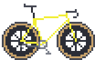
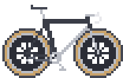
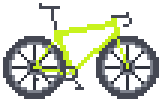
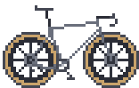
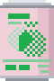
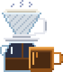
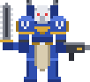

So who am I? I'm a programmer, a gamer, I ride bikes around, and I love tinkering with my computers (I may have modeled this page after neovim, btw).
I've always been into gaming, tech and computer hardware, and I started picking up programming on my own while I was working as a photo editor. The creative side of problem solving got me hooked, so I decided to make a career and a hobby out of it!
Interests
Keyboards
My thing for mechanical keyboards started out innocently enough, with a fairly normal Keychron K6 for gaming. Getting into programming made it a lot worse (or better, depending on who you ask). When you spend all day typing, you start caring a whole lot about what you're typing on, and I've since gone down the rabbit hole of smaller, more ergonomic boards: the Keychron Q9, the TOTEM by GEIST and the open source Corne split keyboard.

PBTfans 1984

SA Retro

KLP Lame

KAM Superuser
Bikes
Years ago I became friends with a coworker who used to be a bike mechanic, and he got me into riding bikes for fun and for sport. It's stuck with me for almost 10 years now, and through a series of pure chance I now work at and manage a store under the same owner he used to work for! Small world.
I mostly ride road and gravel bikes, and I've gone through quite a few over the years. It's something I can't wait to have more time for again once I graduate.

my first serious bike

my restomod

fun, do-everything gravel

my current serious road bike
Currently Enjoying
I like a nice tasting cup of coffee, and recently I've been making filter coffee at home using Café Narval's Patio Libre. It's a bit funkier than the Columbian beans I usually have in the morning, but It's been fun to drink something new. Plus their beans come in these little cans instead of a bag, I think that's neat!

Café Narval

Kinto amber mug
When I can fit a gaming session in these days, I've been spending that time playing Warhammer 40,000: Boltgun (the sequel came out recently too, and I'm hyped to play it once the semester ends). I like the Warhammer universe and first-person shooters. The game feels great, and I find its old-school atmosphere charming.

Warhammer 40,000: Boltgun